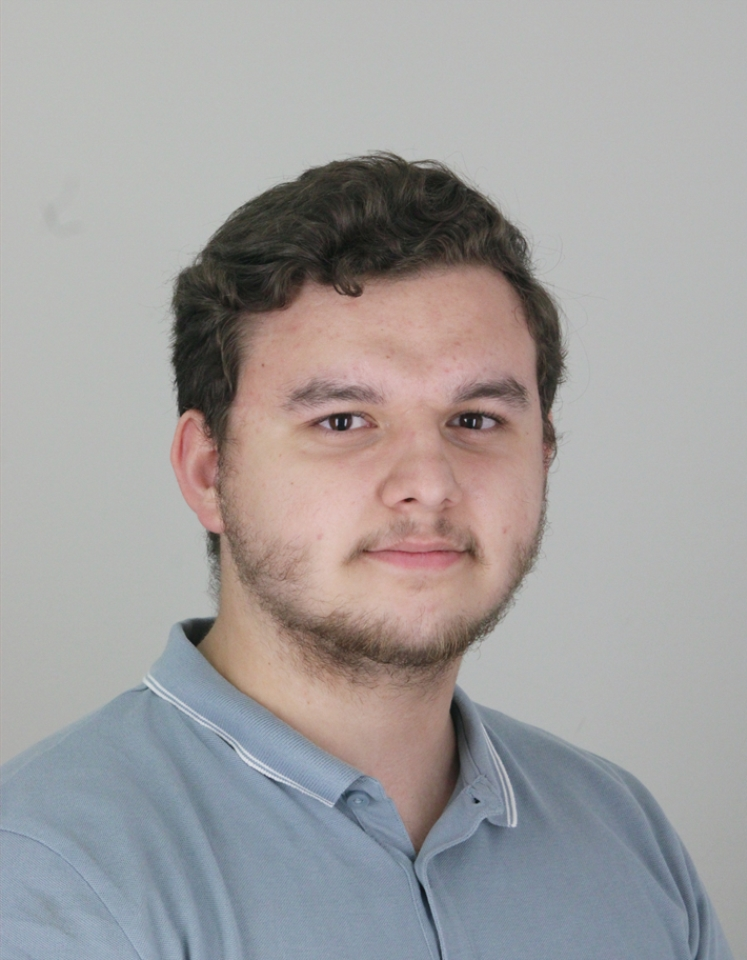

Ingénieur Systèmes & Réseaux · Master CDSI
Passionné par les infrastructures numériques et la cybersécurité, je suis alternant ingénieur systèmes et réseaux chez Réseau-Net et en Master Réseaux & Télécoms option Cyberdéfense à l'INSA Hauts-de-France.

Un passionné d'infrastructures IT et de cybersécurité
Actuellement en Master Réseaux et Télécommunications (Parcours CDSI — Cyberdéfense et Sécurité de l'Information) à l'INSA Hauts-de-France, je construis une expertise solide en ingénierie réseaux, systèmes et sécurité.
Mon alternance chez Réseau-Net, ESN spécialisée en infogérance, me permet d'intervenir quotidiennement sur des infrastructures multi-clients variées : virtualisation, firewalling, supervision, sauvegarde et support niveau 2/3.
En dehors du technique, je suis passionné par la moto, la musique, la pêche et les jeux de stratégie & coopération, des centres d'intérêt qui reflètent ma rigueur et ma curiosité.
Master Réseaux & Télécommunications
option Cyberdéfense & Sécurité de l'Information
INSA Hauts-de-France, Maubeuge
BUT Réseaux & Télécommunications
option Cybersécurité
Université de Haute-Alsace, Colmar
Baccalauréat Technologique
ITEC — Innovation Technologique
Lycée Jean-Baptiste Schwillgué, Sélestat
Brevet des Collèges
Collège Saint-Joseph, Matzenheim
Certified Stormshield Network Administrator
CSNA — Valable 2024 → 2027
TOEIC Listening & Reading
Score : 915 / 990
Alternant Ingénieur Systèmes & Réseaux
Réseau-Net — ESN / Infogérance
Oberhausbergen, Grand Est
Au sein d'un MSP multi-clients, j'assure le maintien en condition opérationnelle et la sécurisation des infrastructures IT d'un portefeuille de clients multi-secteurs. Je travaille en tandem avec différents prestataires et interlocuteurs métiers pour garantir la disponibilité et la performance des environnements de production.
Alternant Technicien Informatique
SOLINEST — Secteur agroalimentaire
Brunstatt-Didenheim, Grand Est
Au sein du service IT d'une entreprise agroalimentaire multi-sites, j'ai assuré le bon fonctionnement du système d'information en étant l'interlocuteur direct des collaborateurs pour leurs besoins IT, tout en participant à des projets de migration d'infrastructure.
Employé Polyvalent
McDonald's
Sélestat
Collaboration en équipe et gestion des commandes dans un environnement dynamique. Expérience m'ayant apporté rigueur, sens du service et intégration réussie dans une équipe.
Stage — Assistance Informatique & Logistique
Würth France
Erstein
Découverte du monde de l'entreprise : assistance informatique, configuration de PDA, gestion de stock et préparation de commandes clients.